Dissoudre les haillons à l'urine
The first part of a diptych, Dissolving Rags with Urine is an invitation to experience firsthand the intimate, yet shared, experience of this bodily fluid. The audience enters this intimacy by entering an enclosed space. Representations are dismantled: first through the reading of personal narrative and poetic fragments, then through the reading of one hundred pairs of words playing with (or subverting) binary oppositions, and finally through the washing of one's own clothes in a collective bath of urine. A final dissolution of the self in a plural urine and ammonia fumes. The recomposition of imaginaries occurs through the audience's direct and attentive confrontation with this fluid.
Performance and installation created at the Grands Carmes in Brussels in October 2025 for the Queerzine Festival.
Pictures by Max Utech, Laur Pontak and Victor Abraham Lacô.
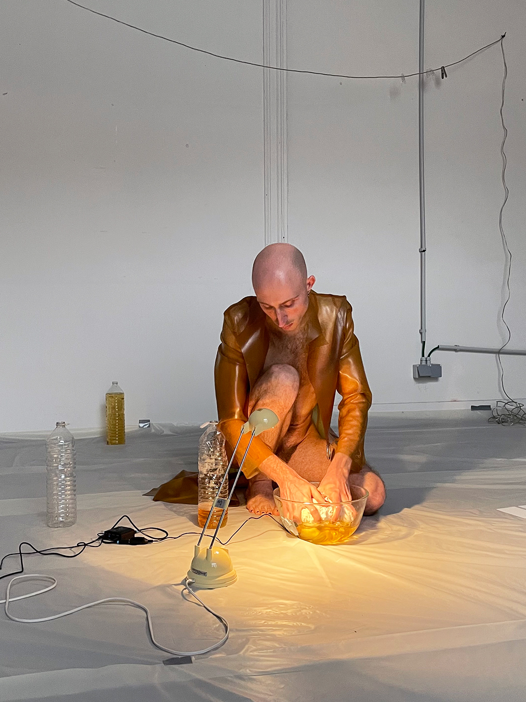
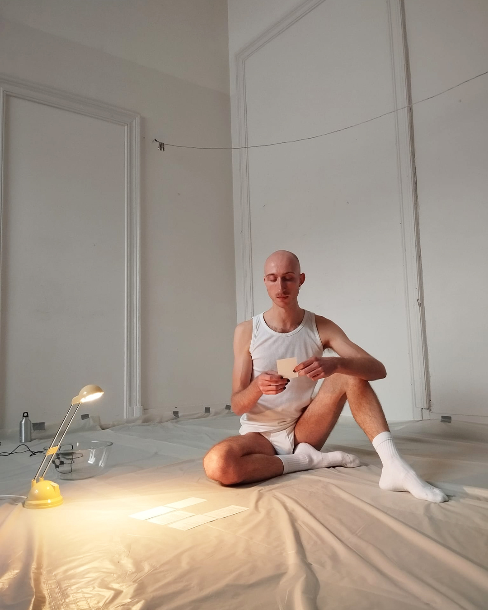
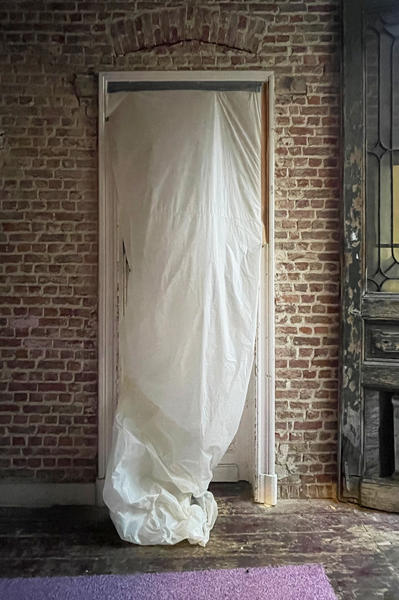
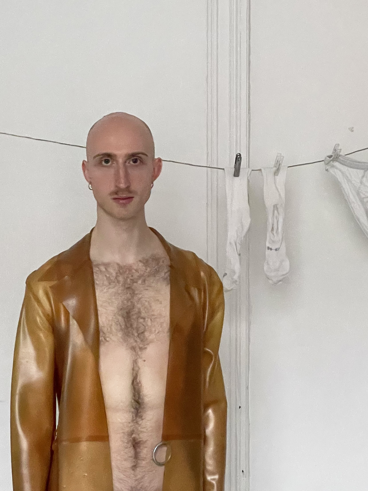
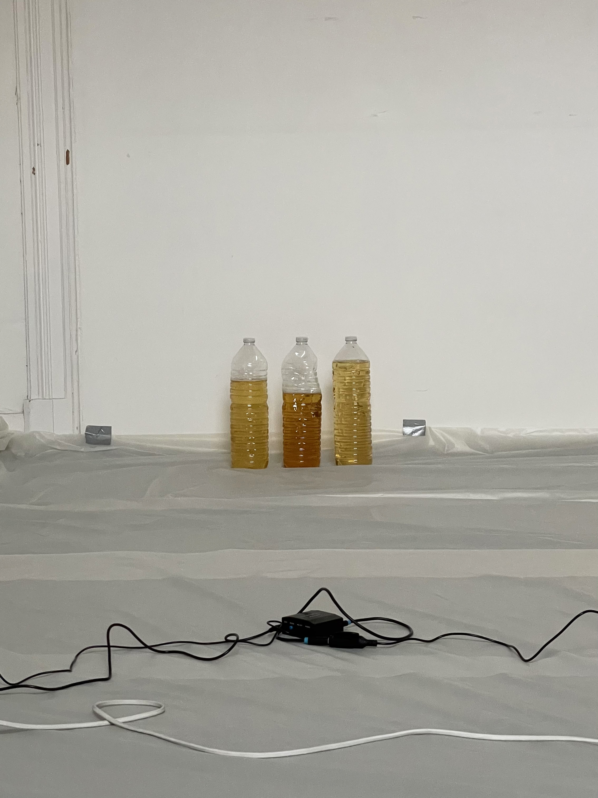
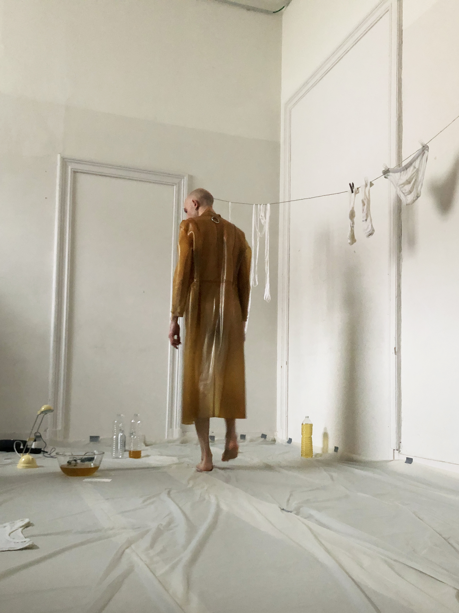
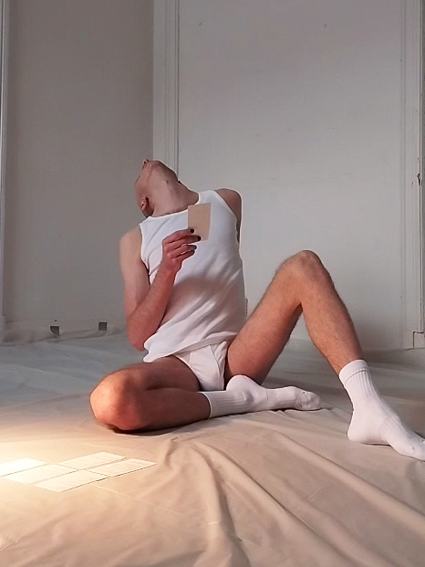
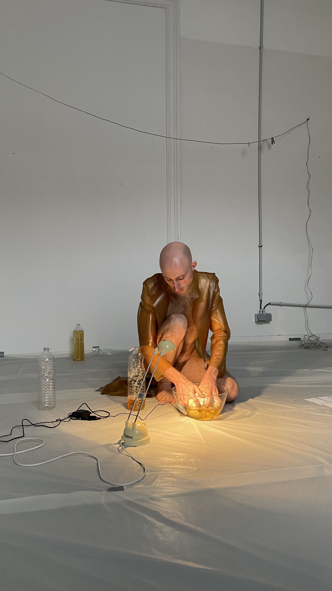
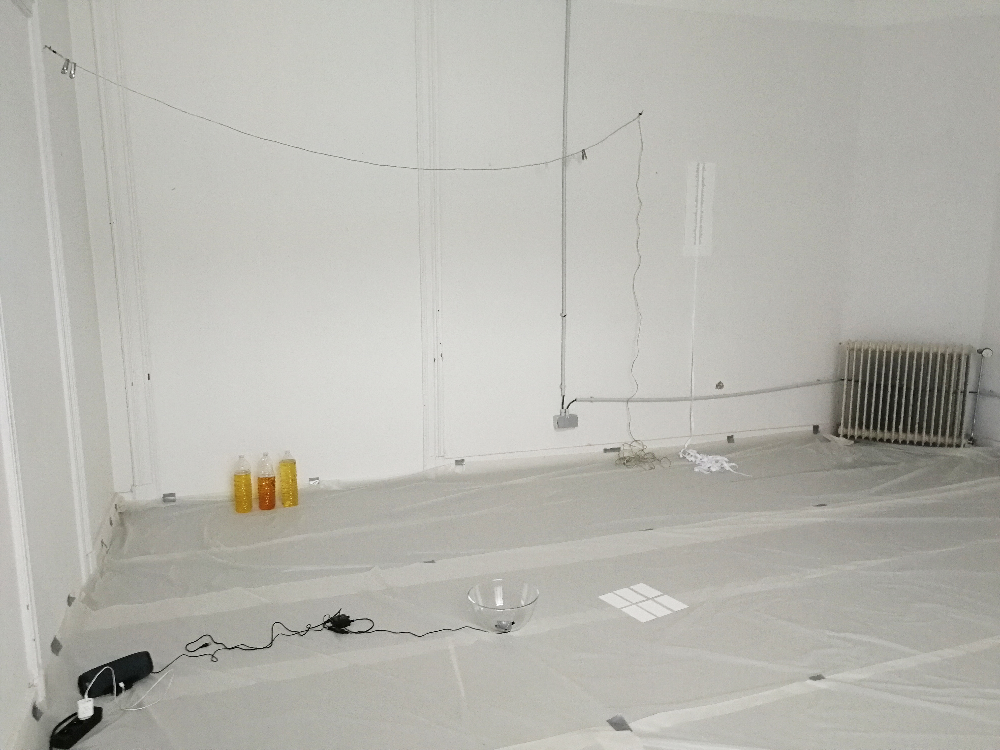
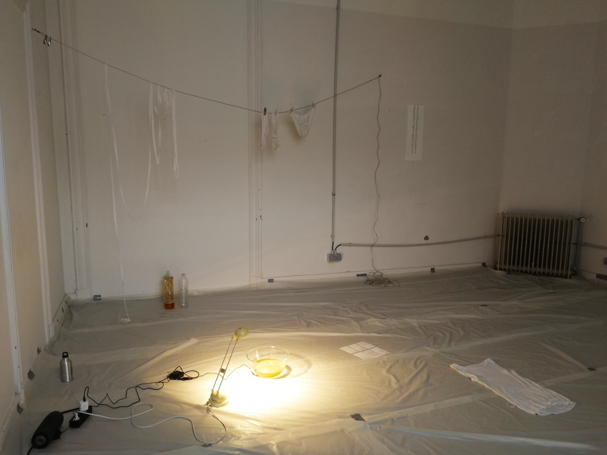
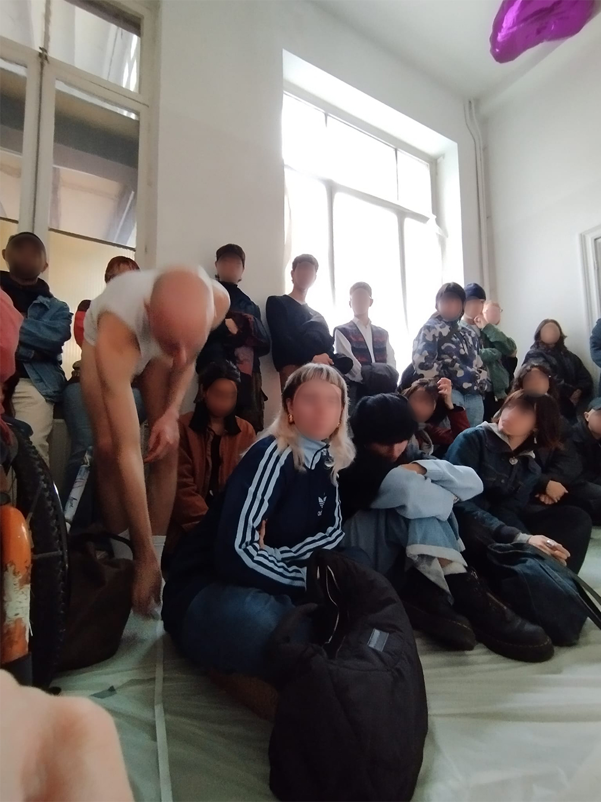